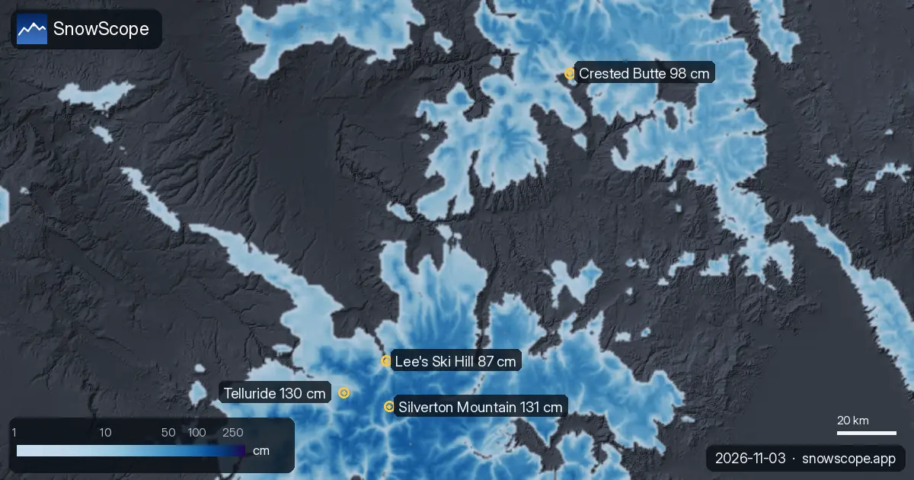

Where to find the best snow in the US West now (3 November)
We combined today's snow depth, the new snow of the last 72 hours and the forecast to pick Silverton Mountain, Telluride and Lee's Ski Hill. Of these resorts, Silverton Mountain has the most snow on its upper slopes today, about 52 in (131 cm); then come Telluride 51 in (130 cm) and Crested Butte 39 in (98 cm).
See the live snow forecast for Silverton Mountain in the SnowScope appSnow depth, powder alerts and the 3D map, free.
Where to go
Silverton Mountain got 26 in (66 cm) of new snow in the last 72 hours. Height matters: at Silverton Mountain, our model gives 23 in (58 cm) at the top (10,974 ft / 3,345 m), 17 in (43 cm) at mid-mountain (10,643 ft / 3,244 m) and 13 in (32 cm) at the base (10,312 ft / 3,143 m). Satellites saw Silverton Mountain snow-covered on 30 October, its last clear day.
Telluride got 25 in (64 cm) of new snow in the last 72 hours. Height matters: at Telluride, our model gives 43 in (109 cm) at the top (12,507 ft / 3,812 m), 11 in (28 cm) at mid-mountain (10,620 ft / 3,237 m) and 2 in (6 cm) at the base (8,734 ft / 2,662 m). Satellites saw Telluride snow-covered on 30 October, its last clear day.
Lee's Ski Hill got 16 in (40 cm) of new snow in the last 72 hours. Satellites saw Lee's Ski Hill snow-covered on 30 October, its last clear day.
| Resort | Snow depth | New snow, 72 h | Coming, next days | Top |
|---|---|---|---|---|
| Silverton Mountain | 52 in (131 cm) | 26 in (66 cm) | 2 in (5 cm) | 10,974 ft (3,345 m) |
| Telluride | 51 in (130 cm) | 25 in (64 cm) | 2 in (5 cm) | 12,507 ft (3,812 m) |
| Lee's Ski Hill | 34 in (87 cm) | 16 in (40 cm) | 2 in (5 cm) | 7,943 ft (2,421 m) |
| Crested Butte | 39 in (98 cm) | 7 in (17 cm) | 3 in (7 cm) | 11,444 ft (3,488 m) |

Rain up to the top?
On Tuesday 3 November the freezing level climbs to about 11,220 ft (3,420 m), above the top of the lifts at 10,974 ft (3,345 m): rain can fall even at the top.
Rain on fresh snow makes it heavy and, after a cold night, icy: the days after are better for groomed runs than for powder.
At about 10,643 ft (3,244 m), Silverton Mountain has 36 in (92 cm) today; a normal 3 November has 3 in (7 cm) there.
That is more than in 46 of the 46 past winters on this date.
In past winters the best snow at Silverton Mountain usually came early January / mid-March.
Day by day at Silverton Mountain: Tuesday 3 November 0 in (1 cm); Wednesday 4 November 1 in (3 cm); Thursday 5 November 1 in (2 cm).
Height by height at Silverton Mountain: 10,312 ft (3,143 m) 13 in (32 cm) on the ground, 1 in (3 cm) more in the next 7 days; 10,643 ft (3,244 m) 17 in (43 cm) on the ground, 1 in (3 cm) more in the next 7 days; 10,974 ft (3,345 m) 23 in (58 cm) on the ground, 2 in (4 cm) more in the next 7 days.
Height, slopes and snow line
At Silverton Mountain, the freezing level reaches 8,793 ft (2,680 m) to 11,220 ft (3,420 m) on 3 November, above the top of the resort (10,974 ft / 3,345 m): rain or wet snow is possible on every slope that day.
Look for snow high up and on north-facing slopes: they keep it longest, while south-facing slopes lose it first in the sun.
Safety and avalanche level
The official avalanche danger level for the Silverton Mountain area today is 3 on the 5-level scale (Colorado Avalanche Information Center).
Before you ski off-piste or go touring, read the official avalanche bulletin (links below).
What is coming next
More snow is on the way: by 6 November our forecast gives 2 in (5 cm) at Silverton Mountain, 2 in (5 cm) at Telluride and 2 in (5 cm) at Lee's Ski Hill.
Forecasts a few days ahead can change: look at the map again the day before you travel.
Tips for skiers
- Snow on the map does not mean a resort is open: check lifts and opening dates on the resort's website.
- Smaller resorts near the leaders often get the same snow with fewer people: compare them on the map.
- Early-season snow is thin. Stay on open, groomed pistes: rocks and grass can hide just under the surface.
- Look for snow high up and on north-facing slopes: they keep it longest, while south-facing slopes lose it first in the sun.
- Get a powder alert in the SnowScope app to know when Silverton Mountain gets fresh snow.
About these numbers
Resort snow depths are the deepest snow on the resort's upper slopes from the SnowScope snow model (about 1 km, run of 3 November); they are estimates for an area, not a measurement at one point. Station values are measurements on the date shown. Forecasts can change. Always read the official avalanche bulletin before going off-piste.
Official avalanche bulletins: Colorado Avalanche Information Center
Cite this report
For research, teaching or the press: the numbers and charts are free to reuse under CC BY 4.0 with this citation.
SnowScope (2026), Where to find the best snow in the US West now (3 November), https://snowscope.app/blog/en/2026/11/us-west-where-to-ski-best-snow-3-november-2026.html, accessed 2026-11-03
SnowScope (Atlas Labs). (2026, November 3). Where to find the best snow in the US West now (3 November). SnowScope snow reports. https://snowscope.app/blog/en/2026/11/us-west-where-to-ski-best-snow-3-november-2026.html
BibTeX
@misc{snowscope2026uswestwheretoskibestsnow,
author = {{SnowScope (Atlas Labs)}},
title = {Where to find the best snow in the US West now (3 November)},
year = {2026},
month = nov,
howpublished = {\url{https://snowscope.app/blog/en/2026/11/us-west-where-to-ski-best-snow-3-november-2026.html}},
note = {Published 2026-11-03 16:31 UTC; accessed 2026-11-03}
}· CC BY 4.0 · Methods, data and tools →
Silverton Mountain: snow and temperature by height, this winter vs last (tools) →
Follow Silverton Mountain
Free: a message when fresh snow is coming, and the forecast every morning.
More snow reports

Deer Valley ski conditions on 13 November 2026: no real snow on the ground yet, about 4 in near the top from the weekend storm, rain on the low East Village side below about 6,700 to 7,600 ft, and 11 in up top over the week.

Bogus Basin snow check for Boise skiers on 13 November 2026: no snow on the ground yet, rain and mixed snow this weekend with a snow level near 6,300 to 6,800 ft, then colder air and about 8 in at the summit by next week.

Alpental snow forecast for 13 November 2026: about 1 in on the upper mountain, rain almost to the summit this weekend with a snow level near 5,400 to 5,600 ft, then 4 to 5 in of mixed rain and snow up top next week.